同一套系统，要同时服务两种诉求完全相反的用户——治疗师需要快速、专业、可控；患者需要清楚、直觉、不怕犯错。这是 KS 界面系统要解决的核心矛盾。
角色与协作本人负责全链路交互设计与界面迭代，包括用户研究、流程定义、原型制作与上线后的可用性验证；后端软件、嵌入式系统与结构工程实现由对应工程师团队完成。安全束带工业设计亦由本人主导。
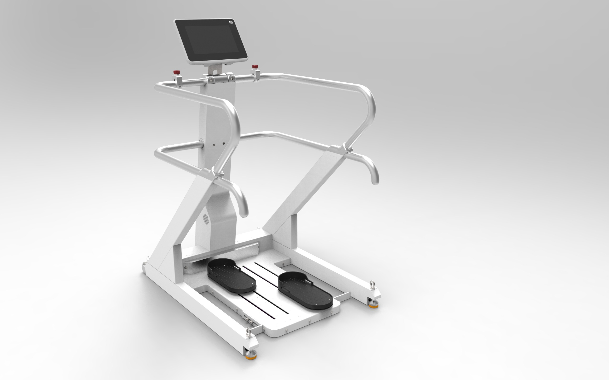
↑ KS 设备外观
KS 源自日本九州产业大学的早期研究与原型验证，补充了卒中患者下肢康复流程中"站"与"步行"之间的关键环节——通过渐进式训练模式，重新教会患者行走过程中的重心转移与迈步协调。训练模式按患者恢复阶段递进：
初始版本只实现了训练功能本身，缺乏界面设计——可用性和美观性都不足。但更核心的挑战在于：这台设备要在家庭环境里被两类角色共同使用，两者的诉求几乎截然相反。
设计目标因此被定义为三个层次：提升界面可用性与视觉清晰度；优化操作流程，降低两类用户的学习成本；提供数据可视化，辅助治疗师决策并引导患者训练动作。
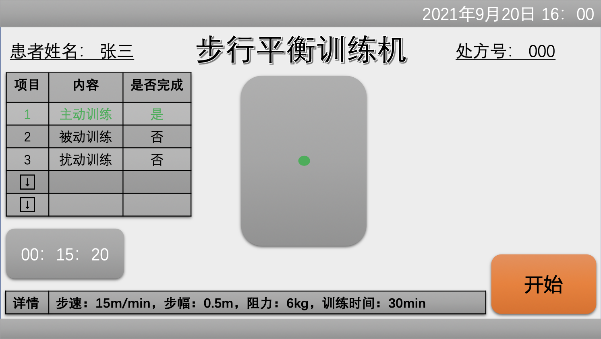
用户管理、训练模式选择、参数调节、训练引导、数据报告（单次 / 日志与趋势）——上面每一条洞察和解法，最终都对应到了具体的界面模块中。
系统整体信息架构如下：
↑ KS 系统信息架构图
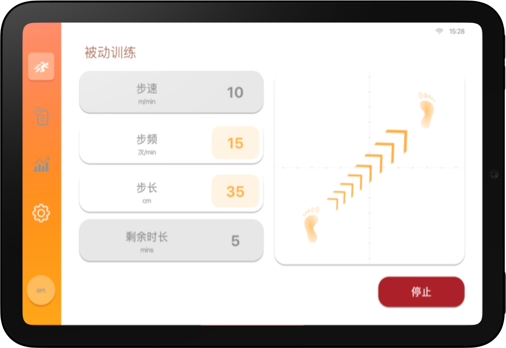
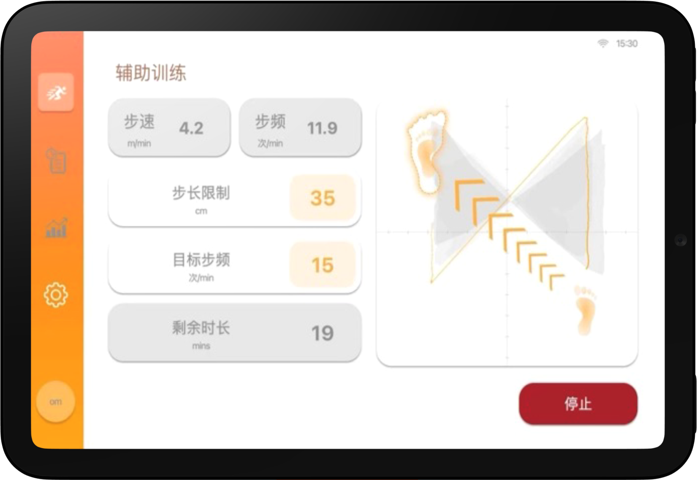
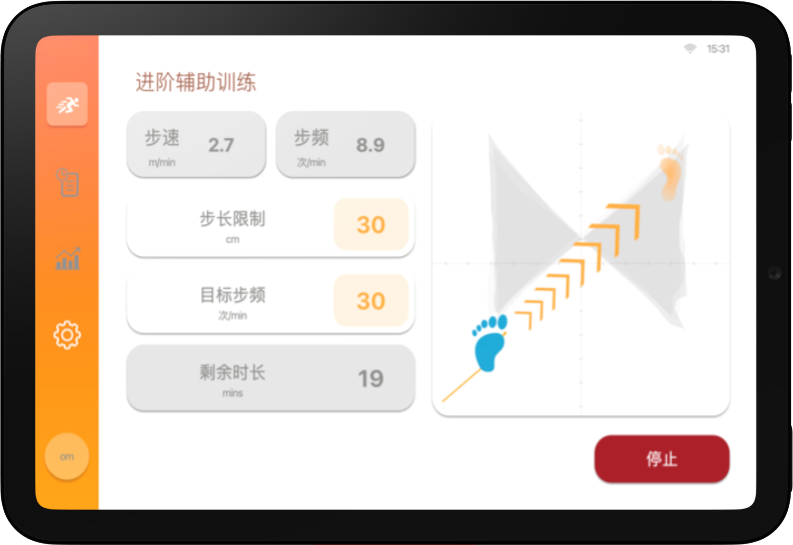
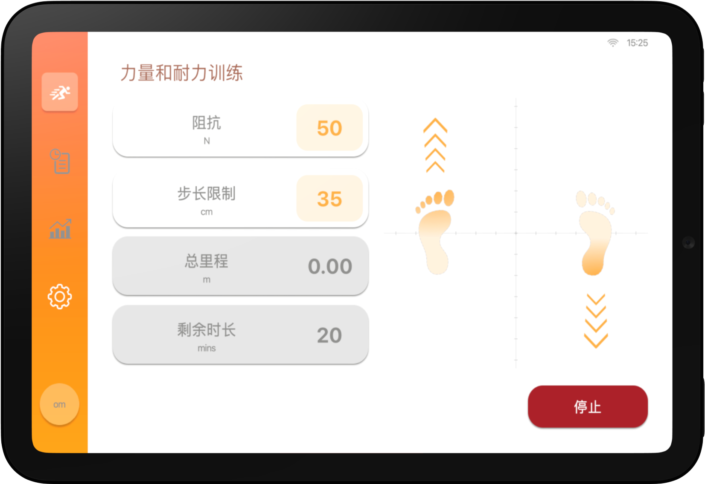
四种模式的训练界面
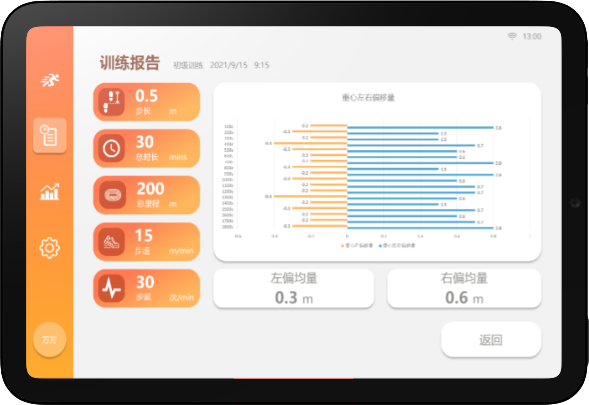
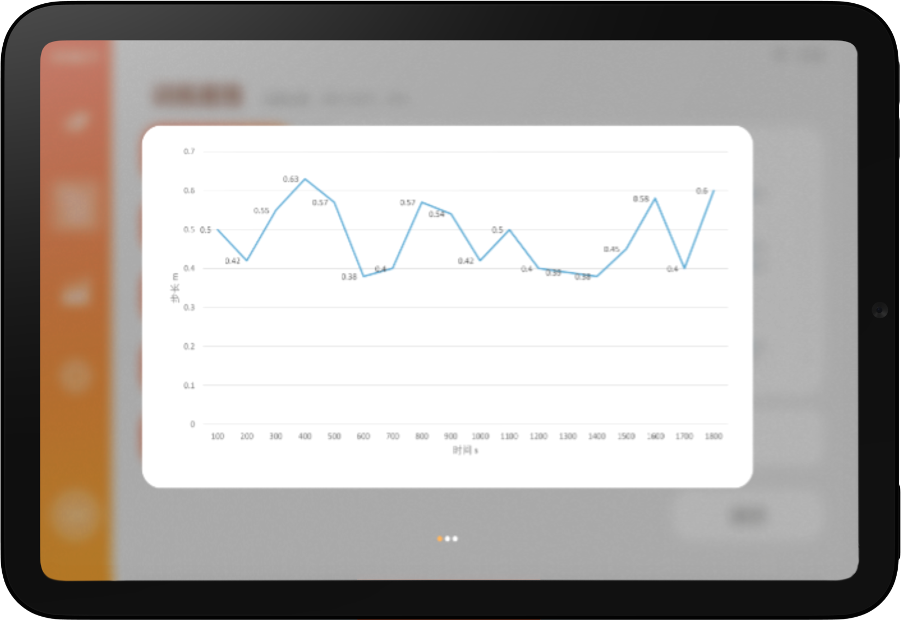
训练报告界面
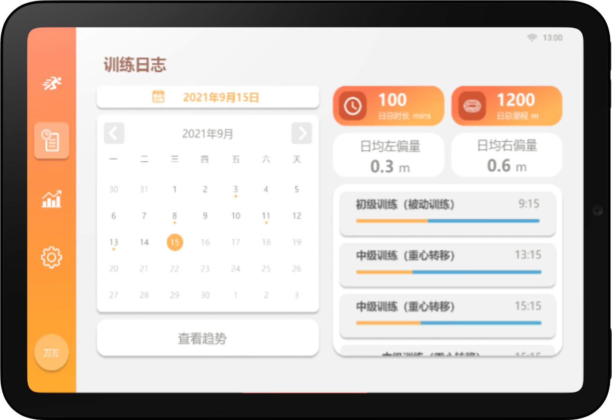
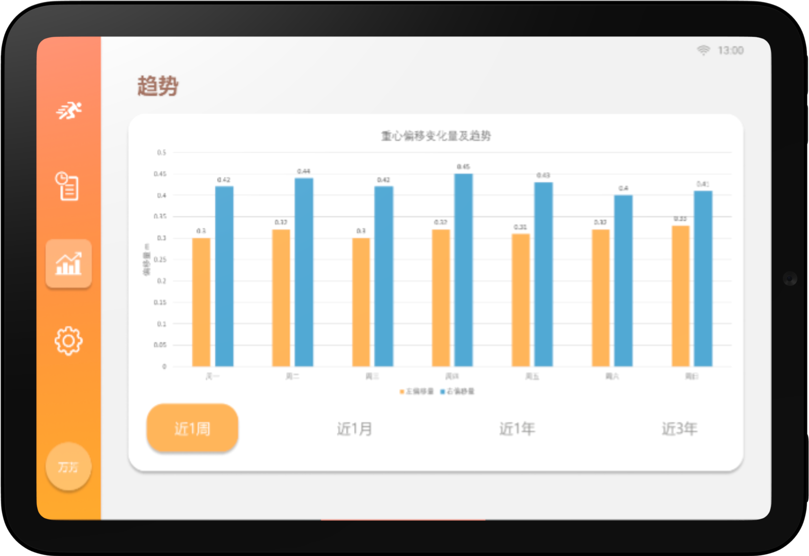
训练日志和趋势界面
方案落地并进入真实使用后，我们持续收集了治疗师和患者的使用反馈。大部分核心痛点得到了改善，但真实场景也暴露出一些新的摩擦：
这三条摩擦点已作为下一轮设计迭代的优先级输入进行跟踪。对我而言，这恰好印证了一个认知：嵌入式医疗系统的体验设计，需要在真实临床场景中经历足够多次的"发现-修正"循环才能真正成熟，而不是靠一次封闭的需求定义就预期一步到位。
KS 的防护方案刻意区别于医院常见的大型减重支持系统，核心目标是在提供跌倒保护的同时，尽可能保留患者的自主活动自由度。从接触面积、绑缚位置到快拆结构，每一版都在"够安全"和"不妨碍训练动作"之间重新权衡。
防护方案与 VRRAS 通用兼容——同一套安全逻辑在两条产品线之间复用，既保障了体验一致性，也降低了开发与制造成本。
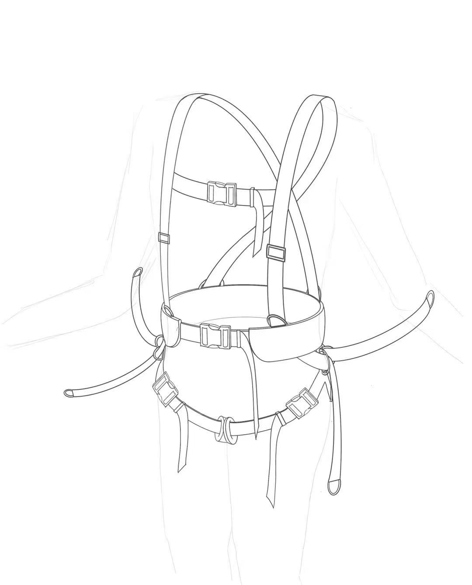
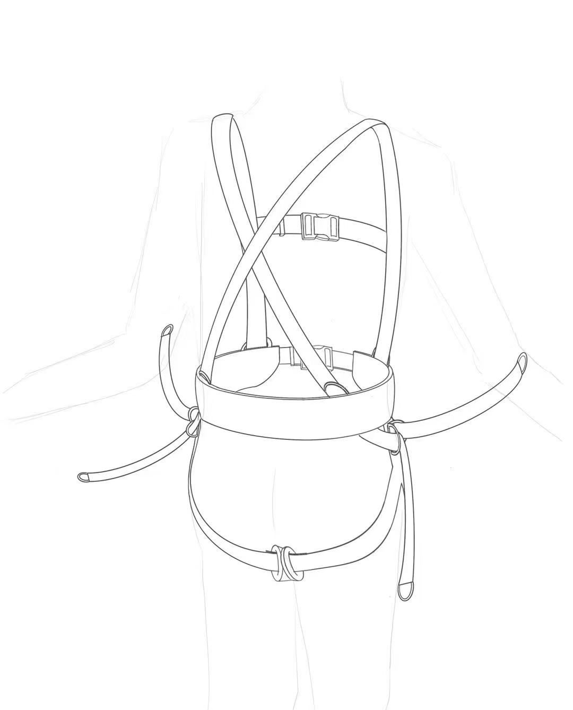
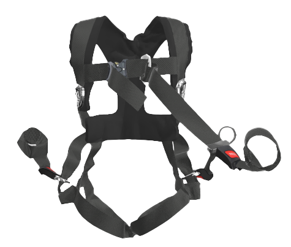
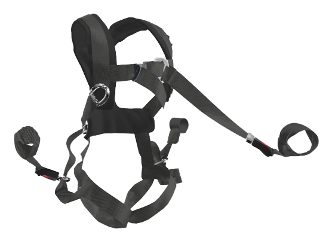
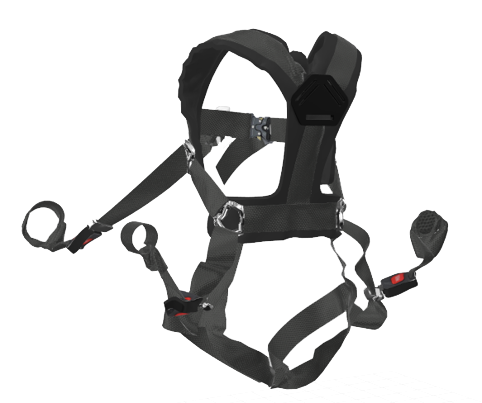